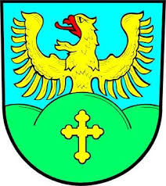
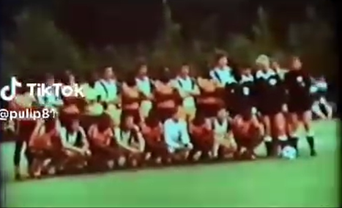
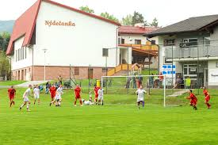
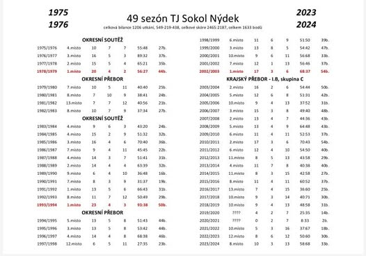

Tj Sokol Nýdek byl založen roku 1975 původně jako jen fotbalový klub, což už dávno není pravda, nyní se pod značkou TJ Sokol Nýdek ukrývá nejen fotbal, ale také hokej a volejbal
Ale ale zpět k historii, zakladately byli dvě již bohužel zesnulé legendy klubu, a to pan Josef Dadák a pan Olda Tomšů. Významnou událostí z historie klubu je přátelské utkání s mezinárodním výběrem Zambie, který zde cestou na letní olympijské hry roku 1980 konané v Moskvě sehrál dva přátelské utkání, jedno s Nýdek a druhé s Třincem.
Do sezóny 2002/2003 byla největším úspěchem klubu výhra v Okresní soutěži mužů okresu Frýdek-Místek, který vyhráli celkem 2x, a to konkrétně v sezonách 1978/1979 a 1993/1994. V již zmíněné sezoně 2002/2003 se klubu povedl doposud největší úspěch, a to výhra v Okresním Přeboru. Od té chvíle klub hraje I. B třídu Moravskoslezského kraje, konkrétně skupinu C, a je nejdéle hrajícím týmem této soutěže v historii.
K nezapomenutelným osobám novodobé historie klubu patří Jiří Lubojacki
 